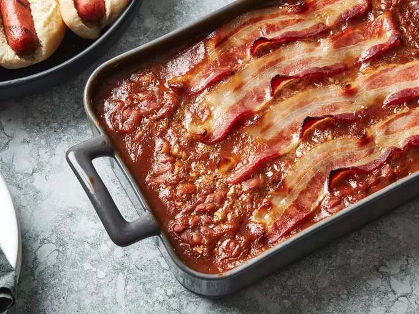

Better Baked Beans

Description:
Tangy, sweet, old-fashioned baked beans are made the easy way using canned beans. This is my grandma's favorite semi-homemade recipe. She makes it every Thanksgiving, and we usually end up scraping the pan clean! There are never any leftovers.
ingredients:
- 1 can baked beans
- 1 small onion
- 3 tablespoons syrup
- 2 tablespoons sugar
- 4 slices bacon
Steps:
- preheat oven to 350 degrees
- stir all ingredients together, bar the bacon
- place into baking tray and layer bacon on top
- cook in oven for 25 minutes